Setting up the SADL IDE Environment
Last revised
02/02/2010
by A. W. Crapo
Install Eclipse 3.2.2
- Download Eclipse 3.2.2 as a ZIP file from either of these two sources and
save as a temporary file:
- Unzip Eclipse 3.2.2 to a location on a local drive. The path should NOT
contain any spaces or non-alphanumeric characters
- Acceptable path: C:\sadl
- Not acceptable: C:\Program Files\eclipse
- Edit the "eclipse.ini" file, e.g., C:\sadl\eclipse\eclipse.ini so that it
contains:
-vmargs
-Xms256m
-Xmx1024m
-Xss1m
- If you wish create a shortcut to the Eclipse executable, e.g., to C:\sadl\eclipse\eclipse.exe
Install or Update the SADL for GE Plug-in
- Download the latest SADL Plug-in for GE update file from
http://crapo.research.ge.com/djst/sadlide.html#WhatsNewbyVersion.
Save as a temporary file.
- Unzip the latest SADL Plug-in to a temporary location, e.g.,
C:\temp\sadlgeupdate
- Start Eclipse by running "...\eclipse.exe" or from the shortcut if you
created one in step 4.
- From the Help menu, select Find and Install Software Updates:
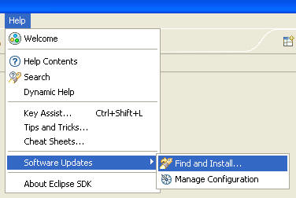
- Select "Search for new features to install" and click Next
- Click on "New Local Site...", then browse to the directory where you
unzipped the latest version of the plug-in, e.g., C:\temp\sadlgeupdate, and
click OK
- Change the name if you wish and then click OK
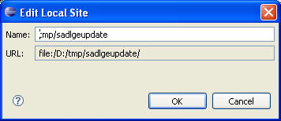
- Click Finsh and follow the prompts to complete the plug-in update. Then
restart Eclipse when prompted.
Check-out and Exercise SADL Test Models
- Go to the Eclipse CVS Repository Exploring Perspective

Select CVS Repository Exploring and click OK
- Click on the icon to add a CVS repository

- Fill in the repository properties as shown, using your own OpenGE userid
and password.

Click Finish to complete.
- Check-out the ShapesDemo project by expanding the new CVS repository and
right-clicking on the folder with that name and selecting Check Out

Repeat for TestGeSadl and TestSadlIde projects
- Switch to the Resources perspective
- Select all three projects, right-click, and select Enable SADL Builder (or
do one project at a time)

Note: building a SADL model means generating an OWL and possibly a rule file
from the SADL file. Building a SADL project means regenerating OWL and rule
files from any SADL files which have been modified.
- Turn off Build Automatically by un-checking
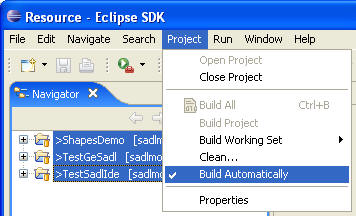
(This isn't necessary but generally it is best to build SADL model files when
editing is complete.)
- Close all but the ShapesDemo project. This can be done by right-clicking
on the project name in the Navigator view and selecting "Close Unrelated
Projects".
- Select the ShapesDemo project and remove all OWL and rule files by
"cleaning" the project
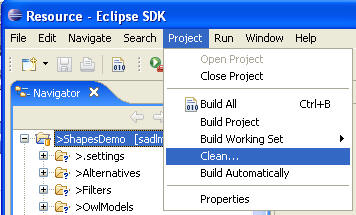
- Build the ShapesDemo project
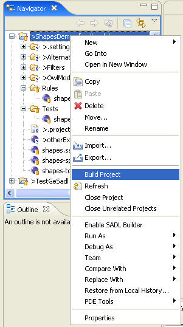
- Scroll through the Console window content and find the error in
otherExamples.sadl
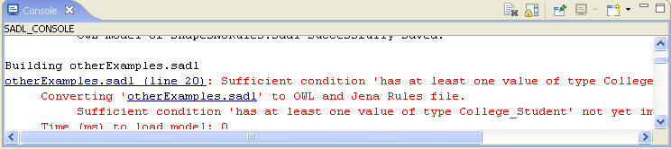
Click on the hyperlink "otherExamples.sadl (line 20)" to show the error in an
editor window.
- Make the Console window full-size by double clicking on the tab label
(Console). Return it to normal size by double clicking on the tab label again.
- Clear the Console window content by clicking on the "Clear Console" icon
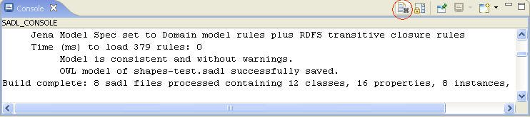
- Show the location of the current editor file in the Navigator view by clicking on the
alignment icon

- Close otherExamples.sadl by clicking on the "x" on the editor tab

- Open the Tests folder in the ShapesDemo project by clicking on the "+" in
front of "Tests"
- Open shapes-test.sadl by double-clicking on the file name in the Navigator
view.
- Run this test case by right-clicking on the file name in the Navigator
view and selecting SADL Actions -> Test
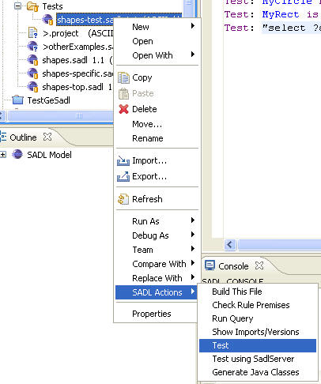
- Examine the test results in the Console window
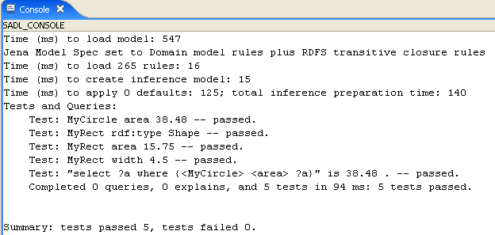
- Change the content of shapes-test.sadl by deleting the comment on MyCircle.
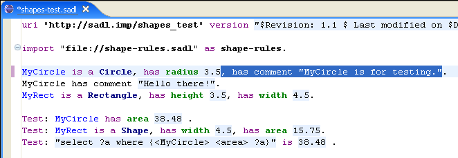
- Compare with the CVS version of the file by right-clicking on the file
name in the Navigator view and selecting Compare With -> Latest from HEAD
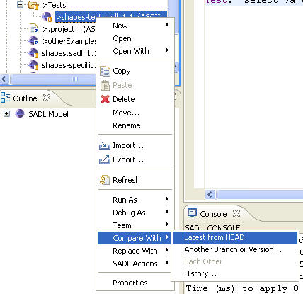
The result should be:

- Restore the file content to the latest in CVS by right-clicking on the
file name in the Navigator view and selecting Replace With -> Latest from
HEAD. Click OK to overwrite local changes.
SADL IDE Basics
- Create your own SADL Project by selecting File -> New -> Project...

- Select General as the project type and click on Next
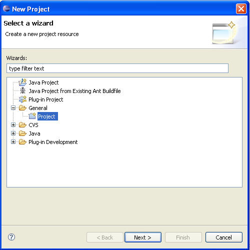
- Enter a project name, e.g., MyFirstSadlProject, and click Finish.
- Right-click on the new project name in the Navigator view and select New
-> File
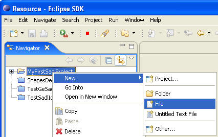
Enter a SADL file name, e.g., test.sadl, and click Finish.
- With the cursor still in the editor for the new SADL file, hold down the
Ctrl key and press the space bar. This requests content completion proposals.

Press the Enter key to select the proposed completion.
Note: sometimes you will get useful completion help and sometimes you won't
(sorry). The next version of the SADL-IDE will focus on robust completion
proposal.
Known Bugs/Limitations and Workarounds
- Large text outputs to the Console window (> 160,000 characters) will
freeze Eclipse 3.2.2. To get around this, change the SADL preference to send
output to a file, which can then be opened to examine output. This should be
fixed with SADL Version 2 on Eclipse 3.4 or 3.5.
- Sometimes the Eclipse text editor gets confused and stops displaying new
characters while they are actually entered in reverse order. When this
happens, save the file, close the editor window, and re-open. This should be
resolved with newer versions of Eclipse and IMP.
- Not all of OWL DL expressivity is covered in SADL Version 1. It will be in
Version 2.